The graphical editor that allow to build diagram (gadl files) is based on the Graphiti Eclipse plugin. It allows to define a GAMA model through a graphical interface. It a allows as well to produce a graphical model (diagram) from a gaml model.
Using the graphical editor requires to install the graphical modeling plug-in. See here for information about plug-ins and their installation.
The graphical editor plug-in is called Graphical_modeling and is directly available from the GAMA update site http://updates.gama-platform.org/graphical_modeling

Note that the graphical editor is still under development. Updates of the plug-in will be add to the GAMA website. After installing the plug-in (and periodically), check for updates for this plug-in: in the "Help" menu, choose "Check for Updates" and install the proposed updates for the graphical modeling plug-in.
A new diagram can be created in a new GAMA project. First, right click on a project, then select "New" on the contextual menu. In the New Wizard, select "GAMA -> Model Diagram", then "Next>" 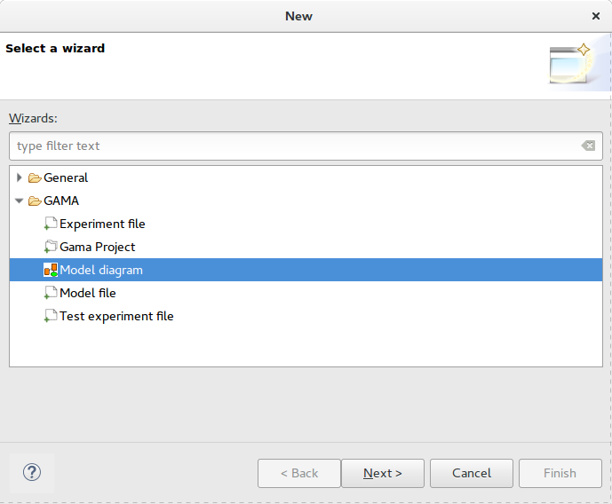
In the next Wizard dialog, select the type of diagram (Empty, Skeleton or Example) then the name of the file and the author.
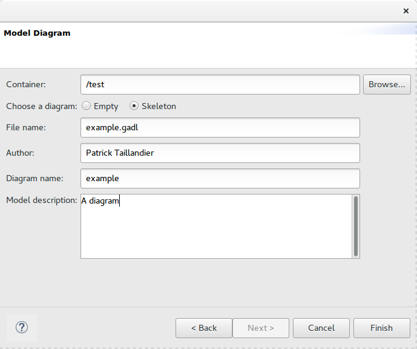
Skeleton and Example diagram types allow to add to the diagram some basic features.
Similarly to GAML editor, the graphical editor proposes a live display of errors and model statuses. A graphical model can actually be in three different states, which are visually accessible above the editing area: Functional (orange color), Experimentable (green color) and InError (red color). See the section on model validation for more precise information about these statuses.
In its initial state, a model is always in the Functional state, which means it compiles without problems, but cannot be used to launch experiments. The InError state occurs when the file contains errors (syntactic or semantic ones).
Reaching the Experimentable state requires that all errors are eliminated and that at least one experiment is defined in the model. The experiment is immediately displayed as a button in the toolbar, and clicking on it will allow to launch this experiment on your model.
Experiment buttons are updated in real-time to reflect what's in your code. If more than one experiment is defined, corresponding buttons will be displayed in addition to the first one.
The following figure presents the editing framework: 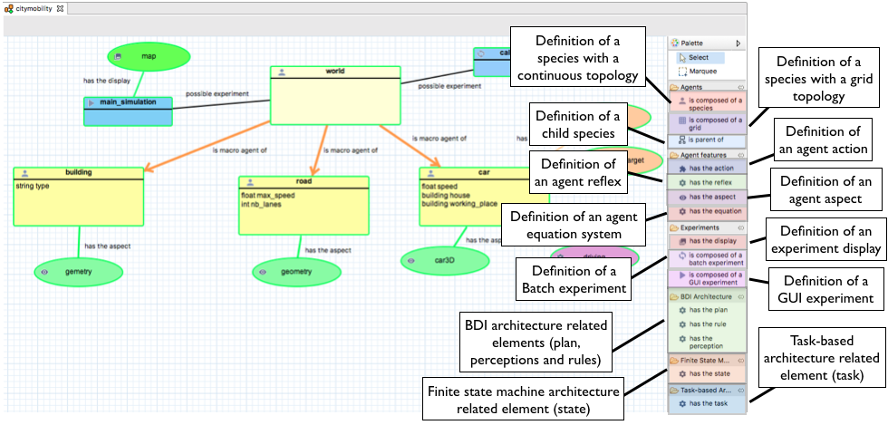

The species feature allows to define a species with a continuous topology. A species is always a micro-species of another species. The top level (macro-species of all species) is the world species.

The grid feature allows to define a species with a grid topology. A grid is always a micro-species of another species.
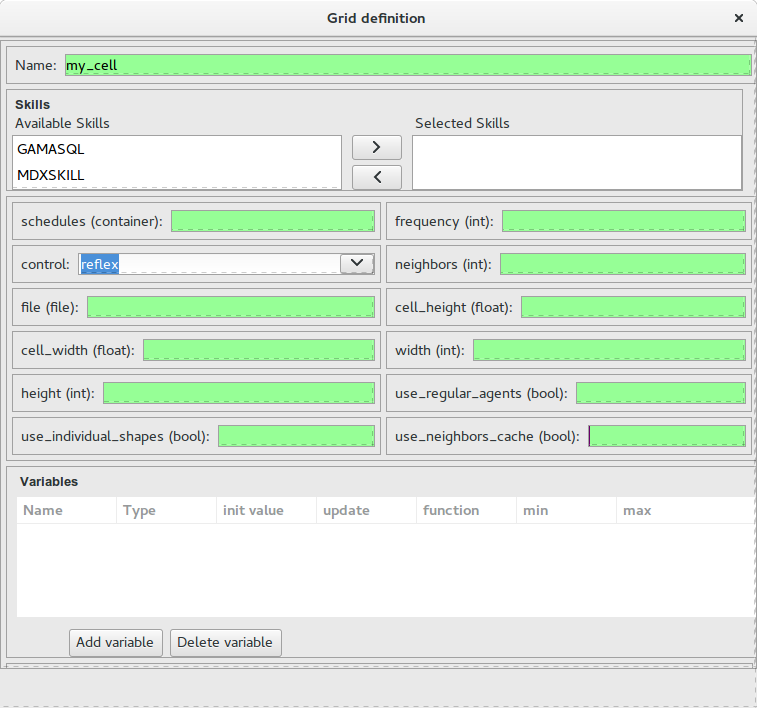
The inheriting link feature allows to define an inheriting link between two species.


When a model is created, a world species is always defined. It represent the global part of the model. The world species, which is unique, is the top level species. All other species are micro-species of the world species.
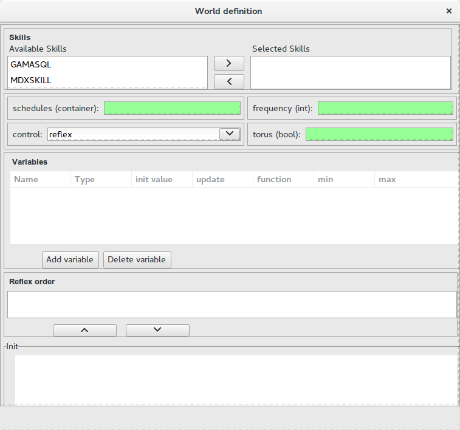

The action feature allows to define an action for a species.
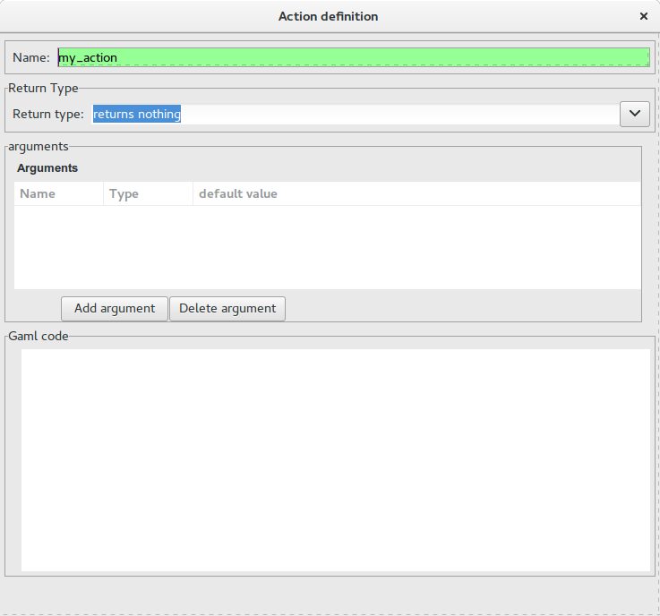

The reflex feature allows to define a reflex for a species.
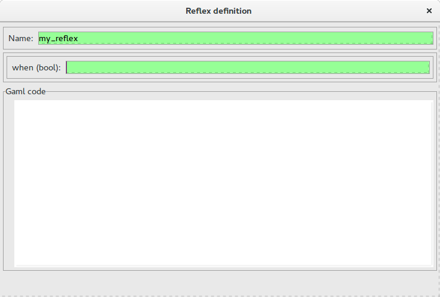

The aspect feature allows to define an aspect for a species.
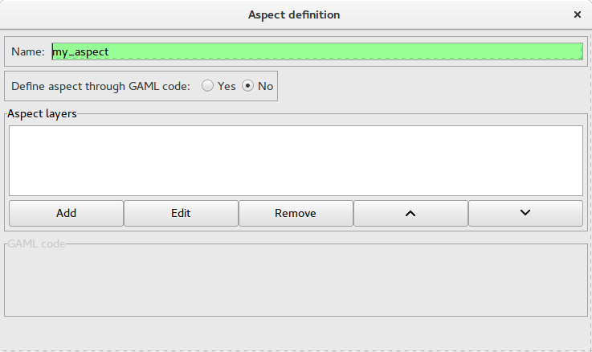
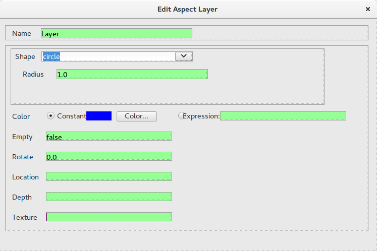
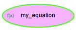
The equation feature allows to define an equation for a species.
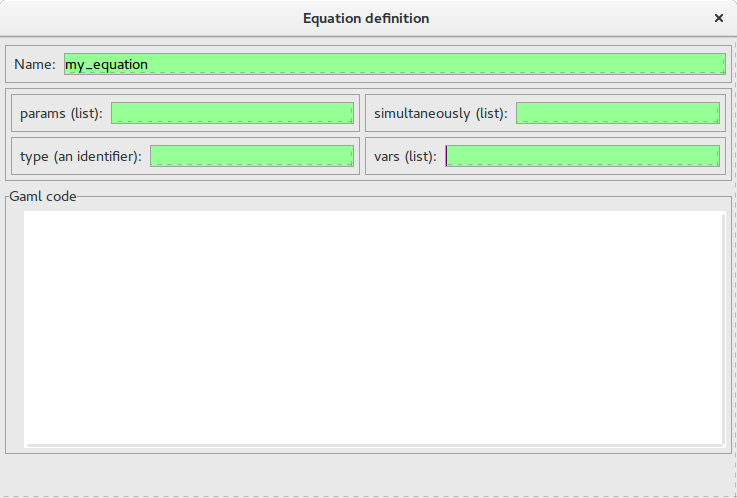

The GUI Experiment feature allows to define a GUI experiment.
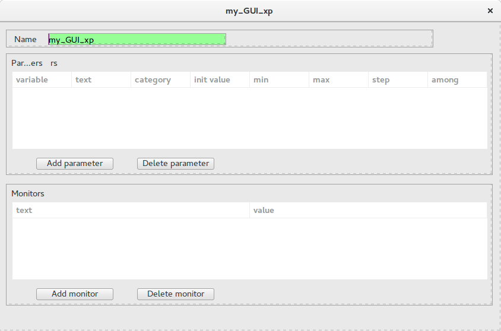

The display feature allows to define a display.
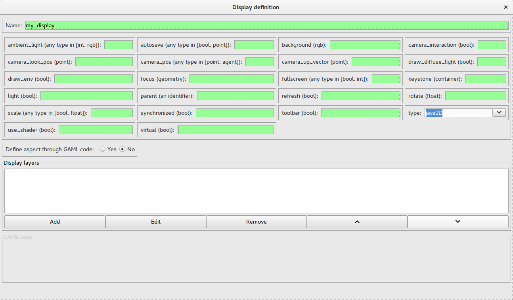
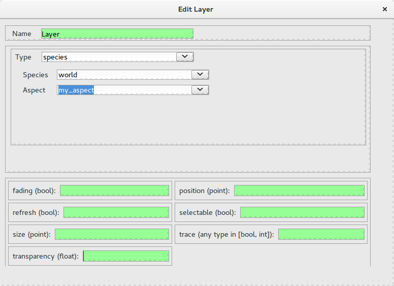

The Batch Experiment feature allows to define a Batch experiment.
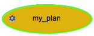
The Plan feature allows to define a plan for a BDI species, i.e. a sequence of statements that will be executed in order to fulfill a particular intention.
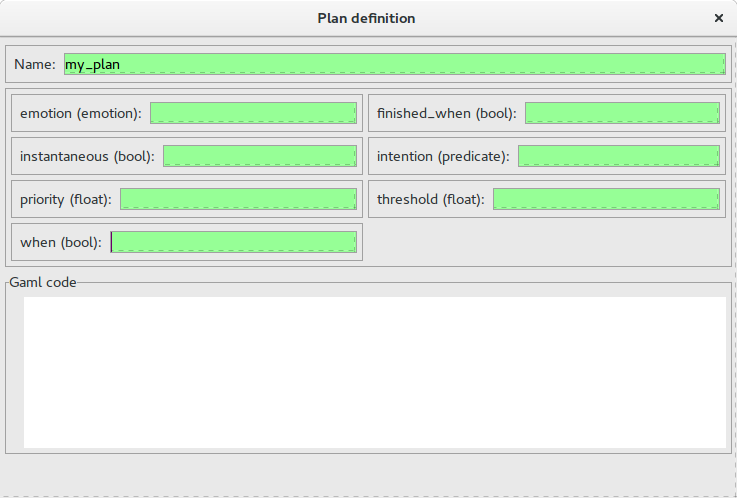
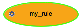
The Rule feature allows to define a rule for a BDI species, i.e. a function executed at each iteration to infer new desires or beliefs from the agent’s current beliefs and desires.
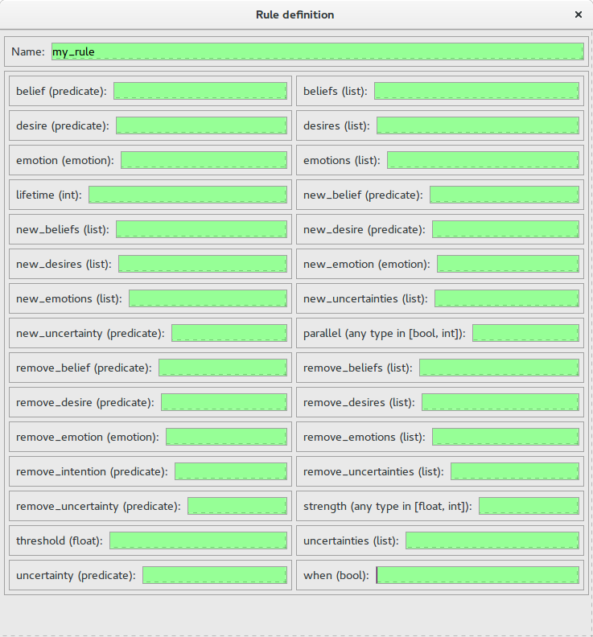
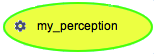
The Perception feature allows to define a perception for a BDI species, i.e. a function executed at each iteration that updates the agent’s Belief base according to the agent perception.
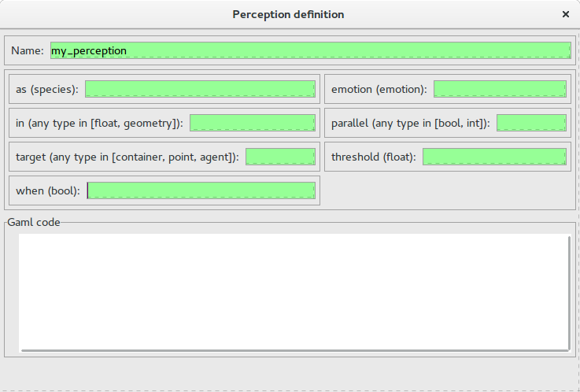
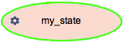
The State feature allows to define a state for a FSM species, i.e. sequence of statements that will be executed if the agent is in this state (an agent has a unique state at a time).
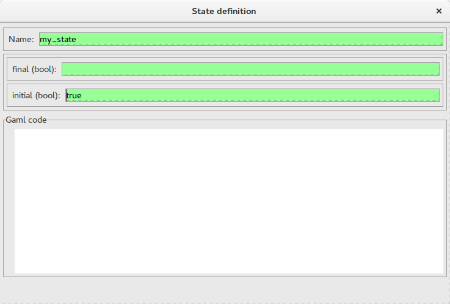
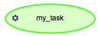
The Task feature allows to define a task for a Tasked-based species, i.e. sequence of statements that can be executed, at each time step, by the agent. If an agent owns several tasks, the scheduler chooses a task to execute based on its current priority weight value.
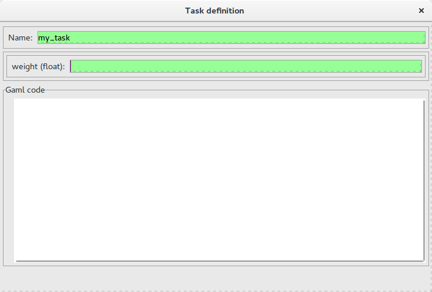
It is possible to change the color of a pictogram.
It is possible to automatically generate a Gaml model from a diagram.